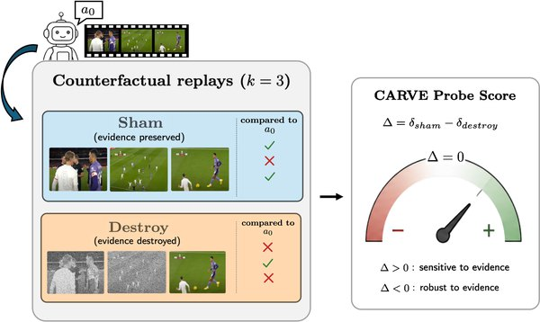

Counterfactual Sensitivity Is Not Repairability: Auditing Replay Probes for Video Evidence

In one sentence. CARVE, a black-box counterfactual probe that compares answers under matched sham and destroy replays of retrieved frames to audit whether tool-using video agents rely on the evidence they retrieve.
Abstract
Tool-using video agents retrieve visual evidence before answering, but the final answer is not forced to depend on what was retrieved. The natural black box test is counterfactual: destroy the semantic content of the frames the agent retrieved and check whether the answer changes, against a matched sham that re-executes the identical pipeline on those same frames. We introduce CARVE, a black-box counterfactual probe that compares answer changes under matched SHAM and DESTROY replays. Across three independent k=3 runs on a frozen VideoExplorer-style agent, DESTROY changes the answer 29.3 percentage points more often than SHAM, yielding a large and reproducible aggregate effect. Question-level scores are less stable, and increasing the replay budget from k=3 to k=10 reduces ties but weakens the original zero-threshold routing policy. At k=3, CARVE selects 538 of 1,258 LVBench questions and improves accuracy by 3.26 points, with higher fallback yield than most matched random subsets. The score shows only a weak association with annotated temporal coverage, so CARVE is best understood as a routing signal rather than a direct grounding classifier. Our implementation is available at https://github.com/KurbanIntelligenceLab/CARVE.
This work was led by an undergraduate student in our lab whom I mentor; I contributed in an advisory role.
BibTeX
@article{alhamidi2026counterfactual,
title = {Counterfactual Sensitivity Is Not Repairability: Auditing Replay Probes for Video Evidence},
author = {AlHamidi, Rama and Khanbayov, Rasul and Serpedin, Erchin and Kurban, Hasan},
journal = {arXiv preprint arXiv:2608.15685},
year = {2026}
}